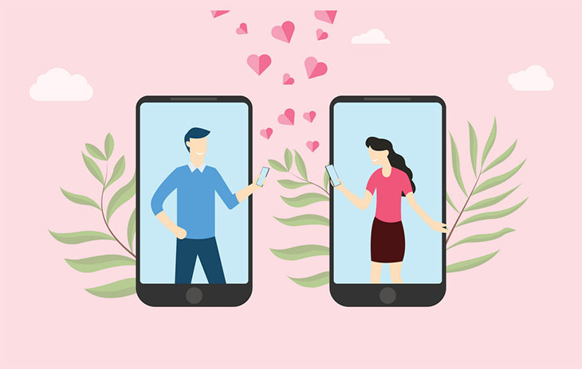

Las citas han cambiado drásticamente en los últimos años, pero más aún en la era de la pandemia de coronavirus.
Para la gran mayoría del mundo, ya no es posible interactuar y conocer a nuevas personas, lo que lleva a contemplar las citas por video cada vez más.
Sin ambiente, contacto físico o el amortiguador de una película o concierto para calmar los nervios, Zoom, FaceTime o Skype pueden parecer demasiado desalentadores para una nueva relación.
Pero según Maria Lopez, una casamentera profesional para el servicio de emparejamiento de élite Copper Club, es posible que solo necesite cambiar tu mentalidad y verlo como una oportunidad para confiar en la comodidad de tu propio hogar mientras conoces a alguien nuevo.
Lopez dijo que hay varias maneras de asegurar una excelente primera cita por video.
Desarrollar una conexión con tu cita por escrito antes de la video-cita, para hacer que ambos se sientan más cómodos. Lopez dice que uno de los mayores beneficios de las citas por video es que a menudo obliga a las personas a poner más esfuerzo en desarrollar una conexión emocional con alguien por mensaje de texto antes de encontrarse cara a cara.
"Entonces, cuando se encuentran en persona, no es incómodo y ya se conocen", dijo Lopez. "Es como si te encontraras con un buen amigo, natural".
Si te das cuenta de que no estás conectando con alguien, siempre puedes terminar la conversación, y cuando cuelgas ya estás en casa, en lugar de tener que quedarte a cenar.
"Estás en la comodidad de tu propia casa y no tienes que decir, ok, tengo que reservar esta tarde de esta fecha, puedes hacerlo durante 15 minutos en cualquier momento desde casa", dice Lopez.
La iluminación es clave, así que asegúrate de estar bien iluminado y elige los ángulos de cámara que te harán sentir con mayor confianza.
Aunque mirar a través de la pantalla del ordenador o el teléfono, en lugar de a través de una mesa, cuando conoces a tu cita por primera vez pueda parecer un poco incómodo, las citas de video pueden ser una excelente manera de sentirte seguro\a.
"En línea, cuentas con la comodidad de tu hogar". "Puedes hacer que la iluminación sea la mejor y puedes mostrarte lo mejor posible. Puedes capturar tu mejor ángulo antes de comenzar la cita".
Antes de atender la llamada, configura tu cámara y limpia el área de la habitación que esté en el marco. La iluminación también puede ayudar a crear buen ambiente, así que quizás puedes replicar las velas románticas que encontrarías en un restaurante al atenuar las luces.
También puedes pedirle a un amigo que te llame por FaceTime o Zoom para que te diga cómo luces en pantalla.
Las citas por video podrían ser una distracción del estrés de lidiar con la pandemia. En general, aunque las citas por video pueden resultar poco convencionales para muchas personas acostumbradas a salir a tomar bebidas o eventos, puede ser una buena manera de mantenerse conectado durante los bloqueos anímicos y la cuarentena. Las citas casuales por video podrían ser una "distracción muy bienvenida".
Citas breves por video de 3 minutos.
Ahorra tiempo y establece conexiones reales.
Aprende más